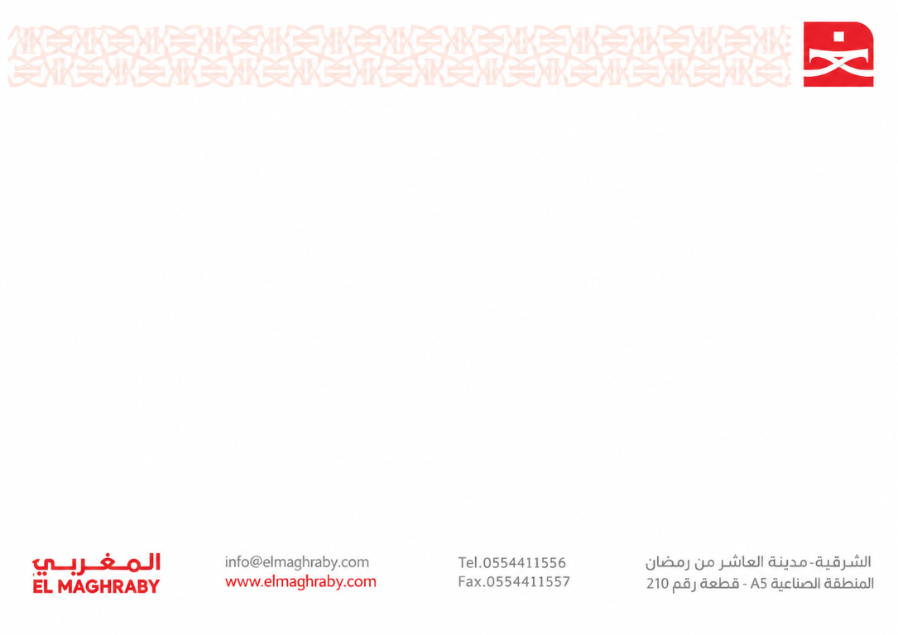

أفضل خط إنتاج (أقل نسبة عيوب)
—
—
نظام مراقبة وضمان الجودة وخطط الفحص الإحصائي (AQL)
مركز متابعة الجودة
البيانات من سجلات سحب عينات الخطوط المكتملة، حسب تاريخ السحب والمنتج والخط وأسباب العيوب المسجلة.
آخر تحديث: —
تُطبق الفلاتر نفسها على المؤشرات والرسوم والجداول. يمكن جمع الشهر مع نطاق تاريخ أضيق، وتظهر بيانات 21 أكتوبر عند اختيار التاريخ الموافق.
أفضل خط إنتاج (أقل نسبة عيوب)
—
أفضل منتج (أقل نسبة عيوب)
—
أكثر عيب تكرارًا
—
أقل عيب تكرارًا
—
إجمالي العينات المفحوصة (شامل)
0
إجمالي العيوب المكتشفة
0
نسبة العيوب الإجمالية
غير متاحة
مرات ظهور أسباب العيوب
0
مقارنة شاملة لجميع الخطوط وسحب البلتات والعينات - جاهز للعرض والتقاط الشاشة
عمود واحد لكل منتج؛ الجزء الأحمر يوضح نسبة العيوب من إجمالي المفحوص
أعمدة رأسية مع إظهار الأرقام المباشرة فوق كل عمود
الأعمدة تمثل مرات ظهور كل عيب والخط يمثل النسبة المئوية التراكمية
كل خلية مستقلة للمنتج على الخط؛ مرر المؤشر لمعرفة عدد العينات والعيوب المكتشفة.
عدد العينات والعيوب لكل زوج خط/منتج تشمل سحب البلتات والخطوط.
| خط الإنتاج | المنتج | الكود | مرات الفحص | إجمالي المفحوص | إجمالي العيوب | نسبة العيوب |
|---|
نطاق الفحص الشامل: يشمل «إجمالي المفحوص» كافة العينات المسحوبة على مستوى جميع خطوط الإنتاج من سحب الخطوط الدورية، وفحص البلتات الواردة، والفحص الساعي. «إجمالي العيوب» يجمع كل عيب تم رصده وتسجيله بغض النظر عن قبول البلتة أو رفضها لضمان الشفافية الكاملة في التحليل والعرض.
| خط الإنتاج | مشرف الخط | مراقب الجودة | إجمالي البلتات | في الانتظار | تم فحصه | مقبول | مرفوض | نسبة الرفض | الحالة |
|---|
نظام إدارة الهوالك
تحليل مجمع لتقارير الهالك وتسليم الفرز الثاني وإرجاع الفرز الثاني للفرز الأول.
| السبب | الكمية |
|---|
| المنتج | الكمية |
|---|
| الخط | الكمية |
|---|
أكثر أسباب الفرز تكرارًا، والكميات ونسب الخصم المسجلة في التقارير.
| سبب الفرز الثاني | عدد التقارير | إجمالي الكمية | متوسط الخصم المسجل |
|---|
| المنتج | عدد التقارير | إجمالي الكمية | متوسط الخصم المسجل |
|---|
تفاصيل المنتجات والكميات، مع تجميع الملاحظات لتوضيح ما حدث في عمليات الإرجاع.
| المنتج | الملاحظة / ما حدث | عدد التقارير | إجمالي الكمية |
|---|
أضف أكثر من تقرير في اليوم، أو اختر تاريخًا لعرض التقارير المحفوظة فيه.
أدخل البيانات واحفظ التقرير؛ يمكنك إضافة أكثر من تقرير في نفس اليوم.
اختر الصنف مرة واحدة للتقرير كله. فترات السحب وأسباب الهالك مستقلة عن عيوب الجودة.
اختر الخط والمنتج والسبب وأدخل الكمية لكل صنف.
| م | الخط | المنتج | الكمية | السبب |
|---|
| الترتيب | سبب الهالك | الكمية | النسبة |
|---|
تقارير محفوظة قابلة للتعديل والطباعة على ورقة A5 أفقية.
اختر منتجًا من قائمة المنتجات المسجلة ليطبع التقرير كاملًا في صفحة A5 أفقية واحدة.
أضف أو احذف مربعات التوقيع كما تريد. العنوان يظهر فوق الخط، والاسم اختياري.

التاريخ:
| المنتج | سبب الفرز الثاني | صورة | نسبة الخصم بعد الخصم الأساسي | الكمية | الاعتماد |
|---|---|---|---|---|---|
سجل إرجاع المنتجات من الفرز الثاني إلى الفرز الأول، واطبع التقرير مع التوقيعات.
أدخل بيانات الإرجاع وأضف التوقيعات المطلوبة قبل الحفظ أو الطباعة.
يمكنك إضافة أو حذف مربعات التوقيع وتحديد المسمى والاسم.
التاريخ:
| المنتج | الكمية | ملاحظات |
|---|---|---|
نظام إدارة الوارد
اختر لوحة تحكم الوارد
لوحة تحكم الكراتين
أذون التسليم
0
الشحنات
0
إجمالي الكمية
0
الأصناف المقبولة
0
الأصناف المرفوضة
0
اختر ملف الشيت، وسيتم التحقق من الصفوف ثم حفظها مباشرة. يدعم الشيت الذي يحتوي على أعمدة المورد والتاريخ والشحنة والكميات والأصناف والملاحظات.
الصفوف الإجمالية والفارغة يتم تجاهلها. إذا كان إذن التسليم مكررًا، لن تُحفظ أي سجلات من الملف.
الإجماليات حسب فترة التاريخ المحددة أعلى سجل الاستلام.
| الشركة | الأذون | الشحنات | إجمالي الكمية | إجمالي الأصناف | مقبول | مرفوض | نسبة الرفض | أسباب الرفض (من الملاحظات) |
|---|---|---|---|---|---|---|---|---|
| جارٍ تحميل التحليل... | ||||||||
أضف الشركات هنا لتظهر في اختيار اسم الشركة عند تسجيل إذن جديد.
يعرض آخر 1000 سجل مطابق للفلاتر.
| إجراءات | التاريخ | المورد | رقم الشحنة | الكمية | إذن التسليم | إجمالي الأصناف | مقبول | مرفوض | كود المرفوض | ملاحظات |
|---|---|---|---|---|---|---|---|---|---|---|
| جارٍ تحميل السجلات... | ||||||||||
لوحة تحكم البلاستيك
سجل المورد والصف والجزء والعينات وأسباب الرفض والقرار النهائي. بيانات البلاستيك محفوظة في سجل مستقل عن الكراتين.
سجلات الاستلام
0
إجمالي الكمية
0
عينات تم فحصها
0
عينات مرفوضة
0
في انتظار فحص المورد
0
إجمالي الكمية والعينات المقبولة والمرفوضة وأسباب الرفض حسب الفلاتر المختارة.
| الشركة | سجلات الاستلام | إجمالي الكمية | العينات المقبولة | العينات المرفوضة | أسباب الرفض |
|---|---|---|---|---|---|
| جارٍ تحميل التحليل... | |||||
أعمدة الملف: التاريخ، اسم المورد، اسم الصنف، اسم الجزء، الكمية، العينات المفحوصة، العينات المرفوضة، أسباب الرفض (افصل بينها بعلامة |)، القرار النهائي، نسبة القبول، ملاحظات.
| التاريخ | المورد | الصنف | الجزء | الكمية | مفحوص | مرفوض | أسباب الرفض | القرار النهائي | ملاحظات | إجراءات |
|---|---|---|---|---|---|---|---|---|---|---|
| اختر لوحة البلاستيك لعرض السجلات. | ||||||||||